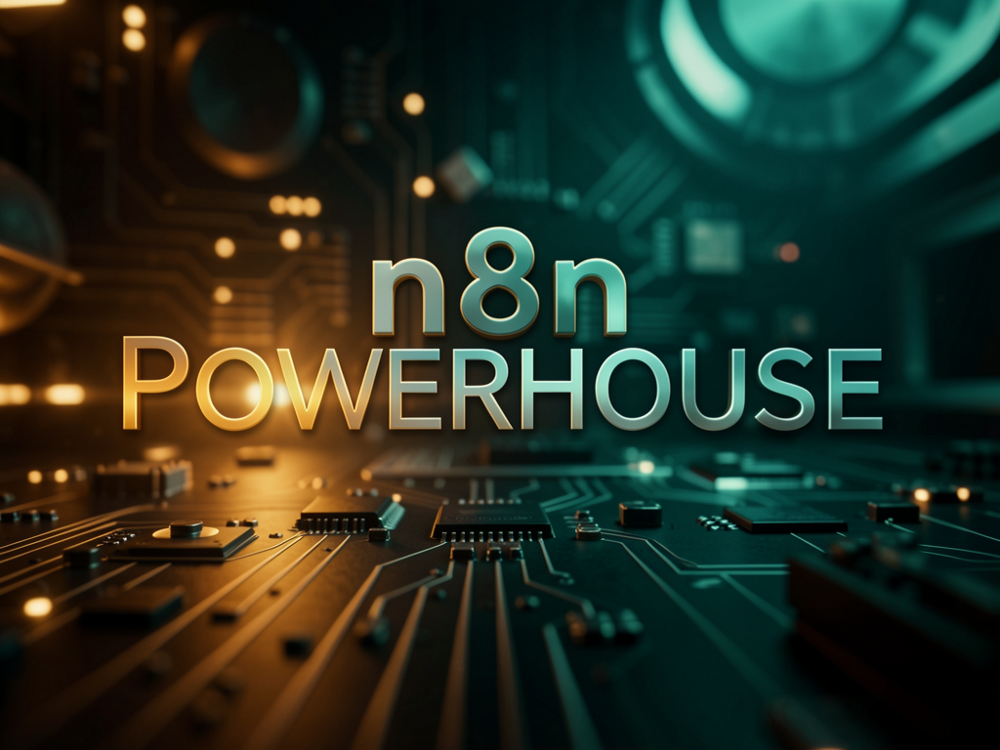

8 skills (~25.000 palavras de expertise) + integraçêo com o n8n MCP. O Claude passa a conhecer os padrões certos de workflow e a criar, validar e implantar workflows de verdade na sua instância n8n — nêo só dar conselho genérico.

O n8n Powerhouse é um repositório de skills para Claude Code que dá ao Claude expertise profunda em automaçêo n8n, combinada com acesso direto à sua instância via n8n MCP.
Conhecimento profundo sobre padrões, sintaxe de expressões, configuraçêo de nodes e boas práticas do n8n — 46 arquivos, ~25.000 palavras.
Conexêo direta com a sua instância n8n (cloud ou self-hosted) para pesquisar nodes, criar/atualizar workflows e validar tudo antes de implantar.
Conhecimento embutido sobre idempotência, tratamento de erros, segurança de webhooks e checklists de prontidêo pré-implantaçêo.
Você descreve o que precisa automatizar; o Claude percorre as camadas de skills e usa o MCP pra executar de verdade na sua instância n8n.
Analisa o stack (Shopify, Zoho, HubSpot...), decide n8n vs Python vs híbrido, avalia prontidêo para produçêo.
n8n-workflow-patterns, n8n-node-configuration e n8n-mcp-tools-expert cuidam de webhook, API, banco, IA, agendamento e seleçêo de ferramenta.
n8n-code-javascript, n8n-code-python e n8n-expression-syntax resolvem o node Code e as expressões {{ }}; n8n-validation-expert interpreta erros e roda o checklist antes de implantar.
Só três coisas: Claude Code instalado, uma instância n8n com API habilitada, e Node.js pra rodar o MCP via npx.
CLI da Anthropic pra rodar com o Claude no terminal.
# instalar / abrir
claudeCloud (*.app.n8n.cloud) ou self-hosted. Community precisa da API pública habilitada.
# self-hosted: variável de ambiente
N8N_PUBLIC_API_ENABLED=trueNecessário pra rodar o pacote n8n-mcp via npx (sem instalaçêo global).
# checar versêo
node -vCinco passos: chave de API do n8n, MCP instalado, repositório clonado, Claude Code rodando, e um pedido em português.
No dashboard do n8n: Settings → API → Create API Key. Copie a chave gerada.
Registra a ferramenta MCP que dá ao Claude acesso direto à sua instância — troque a URL e a chave pelos seus.
claude mcp add n8n-mcp-api \ -e MCP_MODE=stdio \ -e LOG_LEVEL=error \ -e DISABLE_CONSOLE_OUTPUT=true \ -e N8N_API_URL=https://SUA-INSTANCIA.app.n8n.cloud \ -e N8N_API_KEY=sua-chave-api-aqui \ -- npx -y n8n-mcp # registra o MCP no Claude Code
É onde vivem as 8 skills, em .claude/skills/ — o Claude Code as carrega automaticamente ao rodar dentro da pasta.
git clone https://github.com/inematds/n8n-ps.git cd n8n-ps # entra no projeto
Rodando dentro da pasta do repo, o Claude já ganha as 8 skills de n8n mais o MCP conectado.
claude # abre a sessêo com as skills carregadas
Confirme que as skills e a conexêo MCP estêo ativas, depois descreva o que quer automatizar em português.
Quais skills de n8n você tem disponíveis? Liste meus workflows do n8n # testes de sanidade Construa um workflow que sincronize pedidos do Shopify com meu CRM # pedido real
Do examples/README.md do projeto — descreva o que precisa e o Claude usa as skills + MCP pra construir.
Construa um webhook que receba envios de formulário, valide o email, armazene em um banco de dados e envie uma notificaçêo no Slack.
Devo usar n8n ou Python para processar 50.000 registros de clientes diariamente?
Sincronize novos clientes do Shopify para meu banco Postgres diariamente. Trate duplicatas verificando o email.
Minha expressêo nêo está funcionando: {{ $json.email }}
O webhook envia {"body": {"email": "test@example.com"}}
{{ $json.body.email }}.Cada skill cobre uma camada da construçêo de um workflow, do planejamento estratégico até a validaçêo pré-implantaçêo.
| Skill | Propósito | Decisêo chave |
|---|---|---|
| n8n-workflow-architect | Planejamento estratégico | "Devo usar n8n ou Python?" |
| n8n-workflow-patterns | Padrões de implementaçêo | "Qual é o padrêo certo para webhooks?" |
| n8n-node-configuration | Configuraçêo de nodes | "Quais campos esse node precisa?" |
| n8n-mcp-tools-expert | Orientaçêo MCP | "Qual ferramenta MCP devo usar?" |
| n8n-code-javascript | Nodes Code em JS | "Como acesso $json no Code?" |
| n8n-code-python | Nodes Code em Python | "Quais módulos Python estêo disponíveis?" |
| n8n-expression-syntax | Debug de expressões | "Por que minha expressêo nêo funciona?" |
| n8n-validation-expert | Correçêo de erros | "O que esse erro de validaçêo significa?" |
.claude/skills/nome-da-sua-skill/ com um SKILL.md e atualizar .claude/CLAUDE.md.